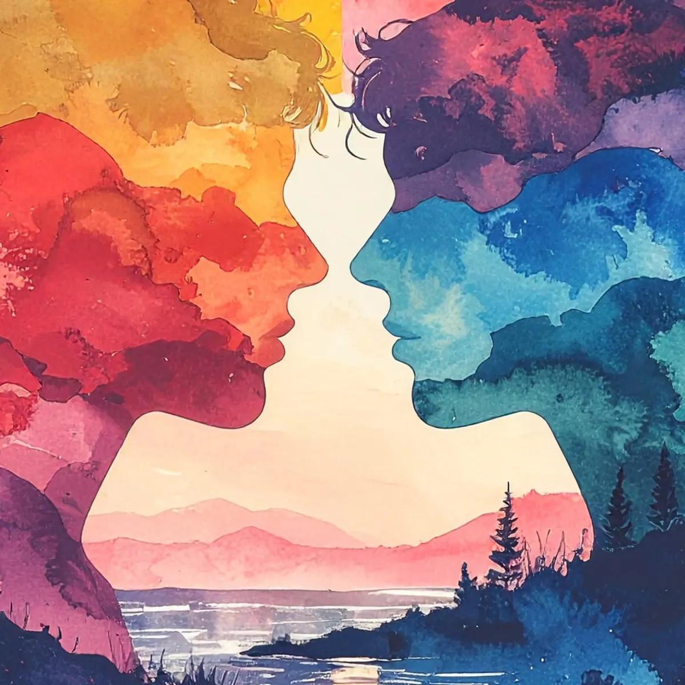
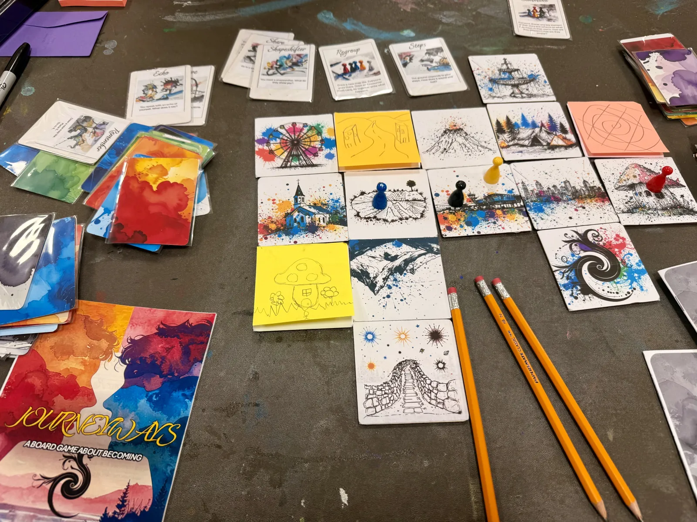

Solo or group play
Whether you're exploring alone or with friends, JOURNEYWAYS adapts to your preferred style of play. Solo sessions offer deep introspection, while group play creates rich, collaborative narratives.
A game about becoming.
You don't play to win; you play to unfold.
You choose, and you uncover.
Explore selfhood not with labels, but with stories, memory, and meaning. Whether solo or as part of a group, each session reveals a story made only by your presence.
Design philosophy
Whether you're exploring alone or with friends, JOURNEYWAYS adapts to your preferred style of play. Solo sessions offer deep introspection, while group play creates rich, collaborative narratives.
Every decision in JOURNEYWAYS carries weight. Your choices don't just affect the game; they reveal aspects of yourself you might not have known existed.
